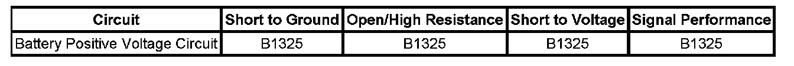

B1325
DTC B1325
DTC DESCRIPTORS
DTC B1325 03
Voltage Below Threshold
DTC B1325 07
Voltage Above Threshold
DIAGNOSTIC FAULT INFORMATION

Perform the Diagnostic System Check - Vehicle prior to using this diagnostic procedure. Initial Inspection and Diagnostic Overview
CIRCUIT/SYSTEM DESCRIPTION
The control modules on this vehicle monitor the battery voltage through the battery positive voltage circuits. This vehicle has multiple modules that will set the DTC. For more information on which modules, refer to Diagnostic Trouble Code (DTC) List - Vehicle. Diagnostic Trouble Code Descriptions
CONDITIONS FOR RUNNING THE DTC
- The voltages supplied to the control modules are in the range of 7-26 volts.
- The ignition is ON.
- The engine is running.
CONDITIONS FOR SETTING THE DTC
B1325 03
The control module detects a system voltage below the calibrated value usually 9 volts for at least 5 seconds.
B1325 07
The control module detects a system voltage above the calibrated value usually 18 volts for at least 5 seconds.
ACTION TAKEN WHEN THE DTC SETS
- The control module immediately disables all outputs when an out of range voltage condition has been detected, with the exception of GMLAN and Run/Crank relay that are disabled after a 3 minute delay.
- The setting of other DTCs is inhibited.
CONDITIONS FOR CLEARING THE DTC
The DTC clears when the malfunction is no longer present.
DIAGNOSTIC AIDS
- A possible cause of this DTC could be overcharging with a battery charger or jump starting.
- A high voltage value in multiple modules indicates a concern in the charging system.
CIRCUIT/SYSTEM VERIFICATION
With the scan tool installed, ignition ON and the engine OFF, observe the Battery Positive Voltage parameter in the data list of the module setting the DTC. The reading should be between 9-18 volts.
CIRCUIT/SYSTEM TESTING
1. If the DTC is history, refer to Charging System Test. Charging System Test
2. If the DTC is current, turn ON the ignition, and with a DMM, measure the voltage between the battery positive voltage circuits of the affected module and the ground circuits of the affected module.
- If the voltage is within 9-18 volts, replace the affected module.
- If the voltage is not within 9-18 volts, measure the voltage between the battery positive voltage circuits of the affected module and a separate good ground.
- If the voltage is within 9-18 volts, test the battery positive ground circuits of the affected module for high resistance or an open, and repair as necessary.
REPAIR INSTRUCTIONS
Perform the Diagnostic Repair Verification after completing the diagnostic procedure. Verification Tests
Control Module References for the affected module replacement, setup, and programming. Programming and Relearning